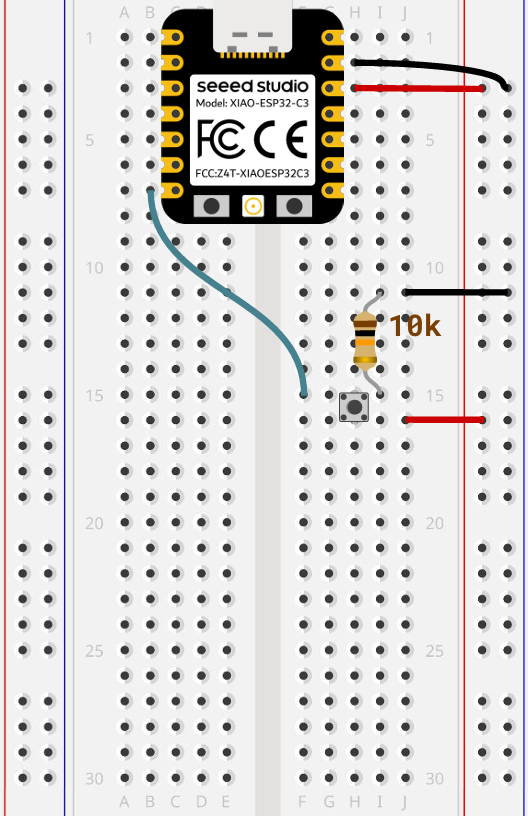

Control Circuit for Crank-Slider Kinetic Sculpture
This hardware circuit uses a 10k external pull-down resistor pushbutton to toggle DC motor operation, based on XIAO ESP32-C3 microcontroller.
Circuit Wiring Diagram

Pull-down resistor button circuit diagram for motor start/stop toggle control.
Motor Toggle Controller Source Code
Firmware for XIAO ESP32-C3, single button to switch motor running status, no speed adjustment feature.
const int buttonPin = D6;
const int A1A = D9;
const int A1B = D8;
bool motorRunning = true;
void setup() {
Serial.begin(115200);
pinMode(A1A, OUTPUT);
pinMode(A1B, OUTPUT);
pinMode(buttonPin, INPUT);
digitalWrite(A1A, HIGH);
digitalWrite(A1B, LOW);
}
void loop() {
int btnVal = digitalRead(buttonPin);
if (btnVal == HIGH) {
delay(30);
if (digitalRead(buttonPin) == HIGH) {
motorRunning = !motorRunning;
if (motorRunning) {
digitalWrite(A1A, HIGH);
digitalWrite(A1B, LOW);
} else {
digitalWrite(A1A, LOW);
digitalWrite(A1B, LOW);
}
while (digitalRead(buttonPin) == HIGH);
delay(30);
}
}
}
Arduino firmware for motor state toggle control, matched with external pull-down button circuit.
Comprehensive Arduino Programming Learning Notes
1. Core Program Structure (Two Mandatory Functions)
void setup(): Runs exactly once after power on / upload; used for pin initialization, serial port configuration, library attachment.void loop(): Executes repeatedly in infinite cycle; main logic for sensor reading, actuator control, state judgment.
2. Pin Mode Configuration Rules
pinMode(pinNum, OUTPUT): Set pin as digital output, output HIGH(3.3V) / LOW(0V) via digitalWrite.pinMode(pinNum, INPUT): Standard input, rely on external pull-up / pull-down resistors (used in our button circuit).pinMode(pinNum, INPUT_PULLUP): Enable internal built-in pull-up resistor, no external resistor needed for buttons.analogRead(pin): Only works for analog pins, returns integer 0~4095 representing input voltage.
3. Digital Read & Button Logic (Pull-Down Circuit Focus)
For external 10k pull-down resistor circuit:
- Button released: Pin connected to GND through resistor →
digitalRead() == LOW - Button pressed: Pin connected to 3.3V power rail →
digitalRead() == HIGH - Mechanical jitter elimination: Double delay detection + wait-for-release while loop to avoid multiple triggers from one press.
4. Boolean State Toggle Principle
Use bool variable to store device running state, flip state with var = !var
bool motorRunning = true; // Trigger once per button press motorRunning = !motorRunning;
When motorRunning = true: Motor forward rotation; When false: Both control pins pull low to cut power and stop motor.
5. Serial Communication Debugging
Serial.begin(baudRate): Initialize serial port, 115200 is common baud rate for ESP32 series.Serial.print()/Serial.println(): Print variable values to serial monitor for hardware debugging.
6. Timing Methods: Blocking vs Non-Blocking
delay(ms): Blocking timing, pauses the entire program during waiting period, unsuitable for multi-task parallel control.millis(): Non-blocking timing, returns total running milliseconds after boot, allows multiple independent timing tasks at the same time without program pause.
7. DC Motor L298N / L9110 Dual Pin Control Logic
- A1A = HIGH, A1B = LOW: Motor forward rotation
- A1A = LOW, A1B = HIGH: Motor reverse rotation
- A1A = LOW, A1B = LOW: Motor power off, full stop
- No PWM speed control implemented in this project, motor runs at full speed when activated.
8. Data Type Basic Definitions
const int: Fixed constant pin number, cannot be modified during program run.int: Integer variable, stores pin reading values, angles, counts.bool: Boolean variable, only stores two values: true / false, perfect for storing switch status.unsigned long: For millis() timestamp storage, large positive integer without negative range.